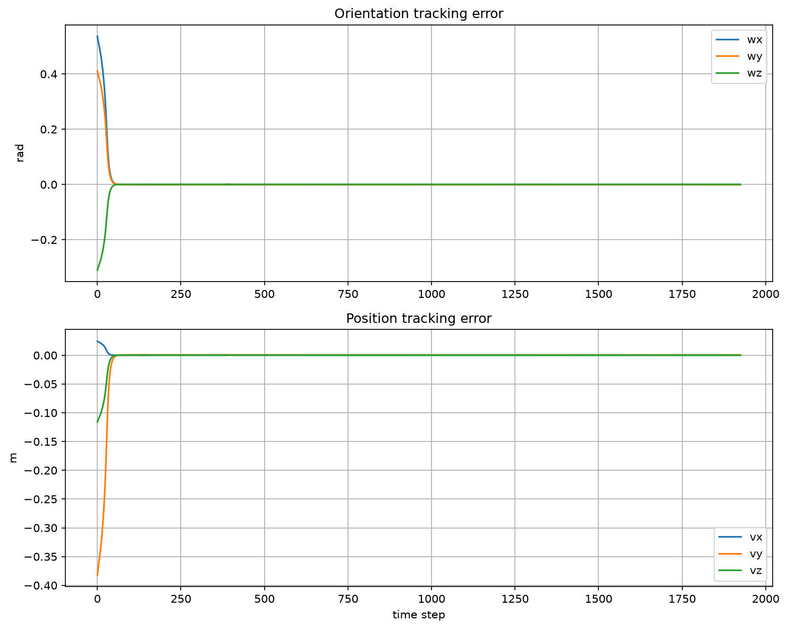

MAE 204 · MOBILE MANIPULATION
Mobile Manipulation Simulator
A four-wheel mobile base and 5-DOF arm follow a pick-and-place reference in CoppeliaSim.

The project
I built the simulation loop that generates an SE(3) end-effector path, computes coordinated wheel and arm commands, advances the robot state, and saves the result for playback and analysis.
How it works
- Reference motion: screw-interpolated segments connect approach, grasp, transfer, release, and retreat poses.
- Feedback: a feedforward twist and PI pose-error correction become wheel and arm rates through the combined Jacobian pseudoinverse.
- Review: state logs and tracking-error plots show how the controller behaved across the run.
Watch the simulation
The recordings show saved trajectory playback in CoppeliaSim.
See the evidence
